◆「特異點修復聲援宣傳活動Pick Up召喚(第一特異點)」期間◆
期間:2022年10月27日(四) 17:00～10月31日(一) 16:59
為了記念「特異點修復聲援宣傳活動」的舉辦，舉辦主線故事「第一特異點 邪龍百年戰爭 奧爾良」中6位活躍從者Pick Up的2種召喚！
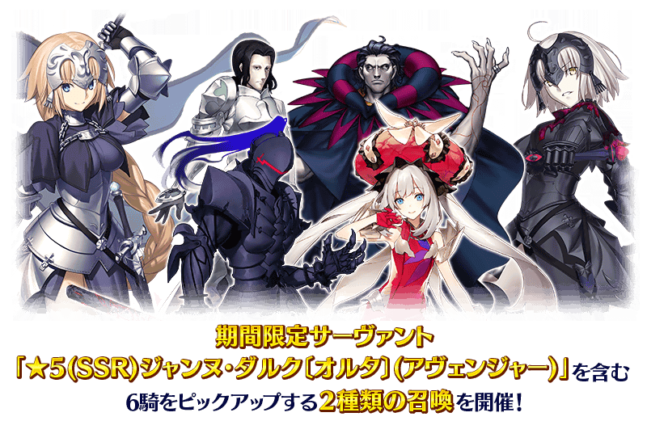
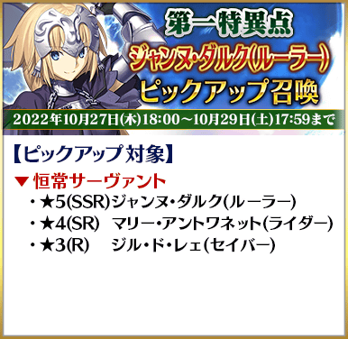
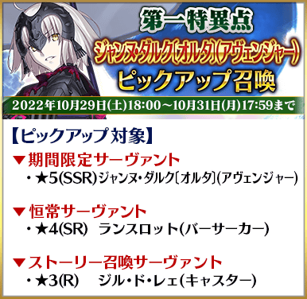
Pick Up期間中，Pick Up對象從者的出現機率提升！
詳情請在聖晶石召喚畫面左下的召喚詳細確認。
11次召喚中確定1張★4(SR)以上和確定1位★3(R)以上的從者！ ※確定★4(SR)以上包含從者和概念禮裝。 ※本頁面皆為開發中圖片。會有與實際圖片相異的情況。
◆「特異點修復聲援宣傳活動Pick Up召喚(第一特異點)」時間表◆
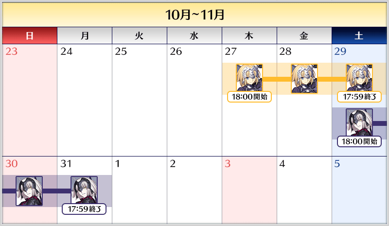
※請注意各召喚中獎勵召喚的計算是各自分別計算。 ※請注意各自的Pick Up召喚舉辦期間不同。 ※本召喚中，只有在各召喚Pick Up的從者才是透過「確定召喚」召喚的對象。
◆「特異點修復聲援宣傳活動Pick Up召喚(第一特異點)」的注意◆
本次的召喚是每個召喚內容做為個別召喚舉辦的設定。
每10次召喚進行的「＋1次獎勵召喚」與用有償聖晶石進行的1天1次限定「1次召喚」會變成每個召喚內容分別計算。
【重要】
◆關於「確定召喚」功能◆
・期間限定Pick Up召喚中，在329次以內未召喚到Pick Up對象★5(SSR)從者情況，只限1次可在進行第330次的召喚時「確定召喚」必定1位Pick Up對象★5(SSR)從者。
・在同時間舉辦多個期間限定Pick Up召喚的情況，各召喚分別(每個召喚畫面頁面)計算召喚次數。另外，以每日交替Pick Up召喚的內容切換情況，各自分別計算召喚次數。舉例，每天23:00時間點變更召喚內容的Pick Up召喚情況，請注意在召喚內容變更的時間點會重置召喚次數的計算。
・請注意期間限定Pick Up召喚中滿足以下任何條件的話，在召喚畫面會顯示「Pick Up對象確定召喚已結束。(ピックアップ対象の確定召喚は終了しました。)」，該召喚中「確定召喚」功能變成無效。
・第329次前召喚到Pick Up對象★5(SSR)從者
・在第330次確定召喚到Pick Up對象★5(SSR)從者
・召喚次數在期間限定Pick Up召喚中用有償聖晶石、無償聖晶石、呼符進行召喚時都會計算。目前的召喚履歴可於該召喚畫面內確認。
※每10次召喚進行的「＋1次獎勵召喚」與用有償聖晶石進行的1天1次限定「1次召喚」也在計算的對象。
※每個召喚內容會分開計算「＋1次獎勵召喚」與1日1次限定的「1次召喚」。請注意在變更召喚內容那天的23:00，「＋1次獎勵召喚」和「1次召喚」的計算會被重置。
※透過有償聖晶石1個「1次召喚」的計算，也會在每天3:00重置。
・在進行11次召喚時滿足「確定召喚」功能條件的情況，在施行11次召喚中會確定召喚1位Pick Up對象★5(SSR)從者。屆時，11次召喚中保障的確定1張★4(SR)以上與確定1位★3(R)以上的從者會另外生效。
・期間限定Pick Up召喚結束後，無法繼承召喚次數到別的召喚。
・故事召喚、友情點數召喚為「確定召喚」功能的對象外。
◆關於1天1次限定的有償聖晶石召喚◆
※可以1天1次限定於期間限定召喚用有償聖晶石1個進行「1次召喚」。
※透過有償聖晶石1個的「1次召喚」，每天3:00重置。
※透過有償聖晶石1個的「1次召喚」對應的聖晶石召喚有好幾個的情況，各個召喚中1天各進行1次有償聖晶石1個的「1次召喚」。
※請注意就算進行透過有償聖晶石1個的「1次召喚」，不包含在1次獎勵的計算。
※聖晶石購入時賦予的「附贈(オマケ)」是做為無償聖晶石而不包含在有償聖晶石的個數，請注意別搞錯。另外，持有聖晶石的細項，可從持有道具一覧確認。
◆關於透過召喚獲得從者硬幣◆
在期間限定召喚、故事召喚、友情點數召喚中入手從者時，可獲得該從者的從者硬幣。
◆有關從者的注意◆
※請注意下述的從者只會從成為Pick Up對象的召喚被抽出。
・★5(SSR)貞德〔Alter〕(Avenger)
・★3(R)吉爾・德・萊斯(Caster)
※下述的從者在Pick Up期間結束後不會追加到故事召喚。
・★5(SSR)貞德〔Alter〕(Avenger)
※請注意自2022年11月2日(三) 12:00追加到故事召喚的下述從者在本召喚中為抽出對象外。
・★4(SR)黃飛虎
※本召喚的Pick Up期間中，透過章節進行所追加的下述的從者，就算通過各章前也能入手。
・★3(R)吉爾・德・萊斯(Caster)
※下述的從者在Pick Up期間結束後仍會在故事召喚被抽出。
・★5(SSR)貞德(Ruler)
・★4(SR)瑪莉・安東尼(Rider)
・★4(SR)蘭斯洛特(Berserker)
・★3(R)吉爾・德・萊斯(Saber)
・★3(R)吉爾・德・萊斯(Caster)
期間限定從者
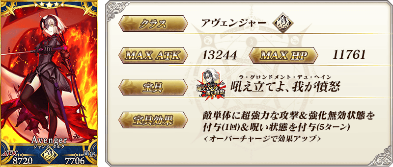 ※上述「★5(SSR)貞德〔Alter〕(Avenger)」的卡面為靈基再臨第1階段。
常駐從者
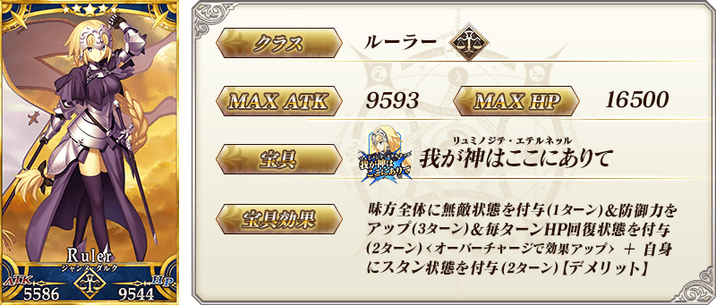 ※上述「★5(SSR)貞德(Ruler)」的卡面為靈基再臨第1階段。
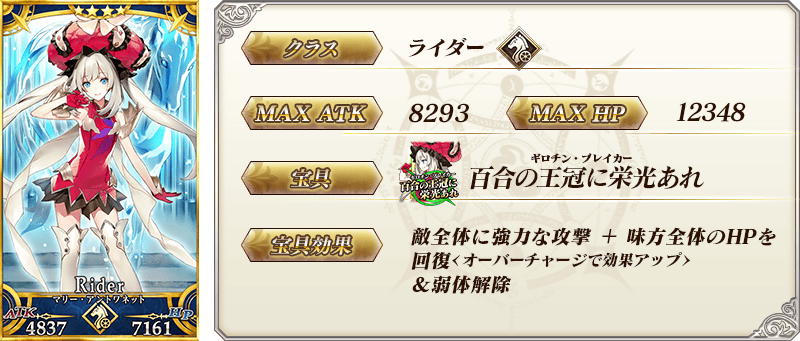 ※上述「★4(SR)瑪莉・安東尼(Rider)」的卡面為靈基再臨第1階段。
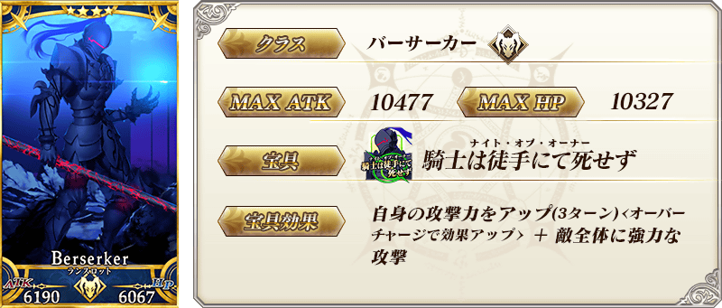 ※上述「★4(SR)蘭斯洛特(Berserker)」的卡面為靈基再臨第1階段。
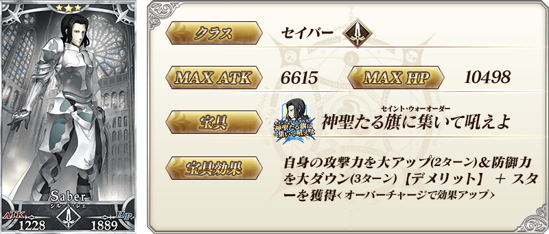
故事召喚從者

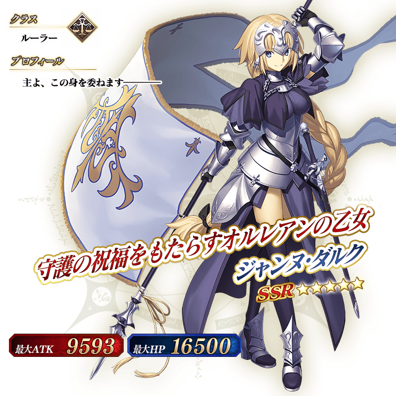 ※上述「★5(SSR)貞德(Ruler)」的立繪為靈基再臨第1階段。
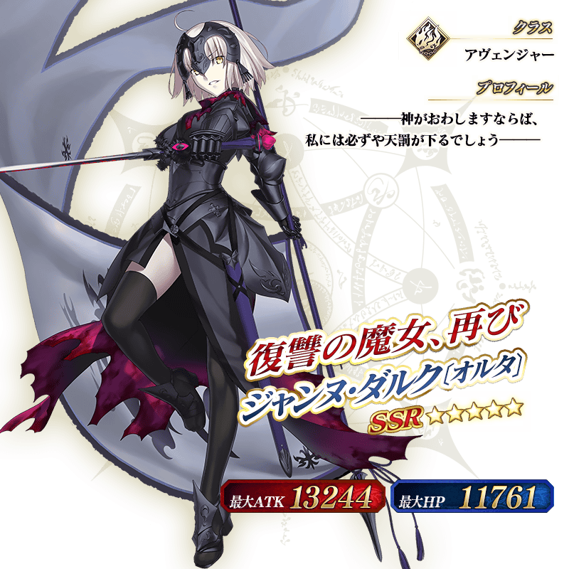 ※上述「★5(SSR)貞德〔Alter〕(Avenger)」的立繪為靈基再臨第1階段。
介紹在本召喚Pick Up的4位從者寶具演出！
【★5(SSR)貞德(Ruler)】
【★5(SSR)貞德〔Alter〕(Avenger)】
【★4(SR)瑪莉・安東尼(Rider)】
【★4(SR)蘭斯洛特(Berserker)】
其他還有，「特異點修復聲援宣傳活動」以期間限定同時舉辦！
並且，期間限定「特異點修復聲援宣傳活動Pick Up召喚(第二特異點)」も舉辦預定！
■「特異點修復聲援宣傳活動」詳細情報

■「特異點修復聲援宣傳活動Pick Up召喚(第二特異點)」詳細情報